뉴스 쇼츠 — MINOR
현재 작업의 실제 장면 수와 텍스트를 사용하므로 시안의 예시 5문단과 다름. 작은 글꼴·간격 차이, 승인 창의 필수 검토 항목은 유지.
1920px viewport

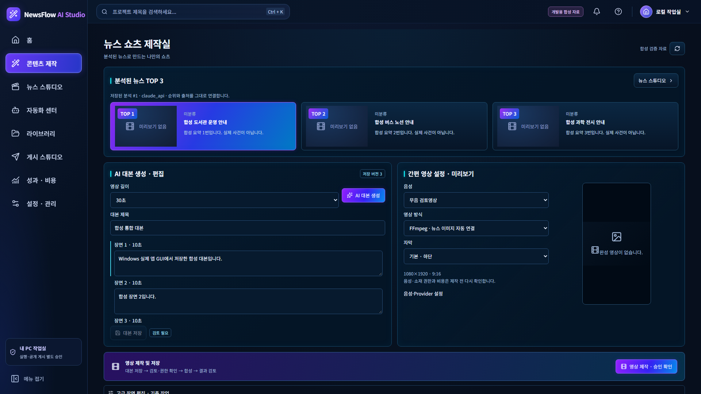
1366px viewport
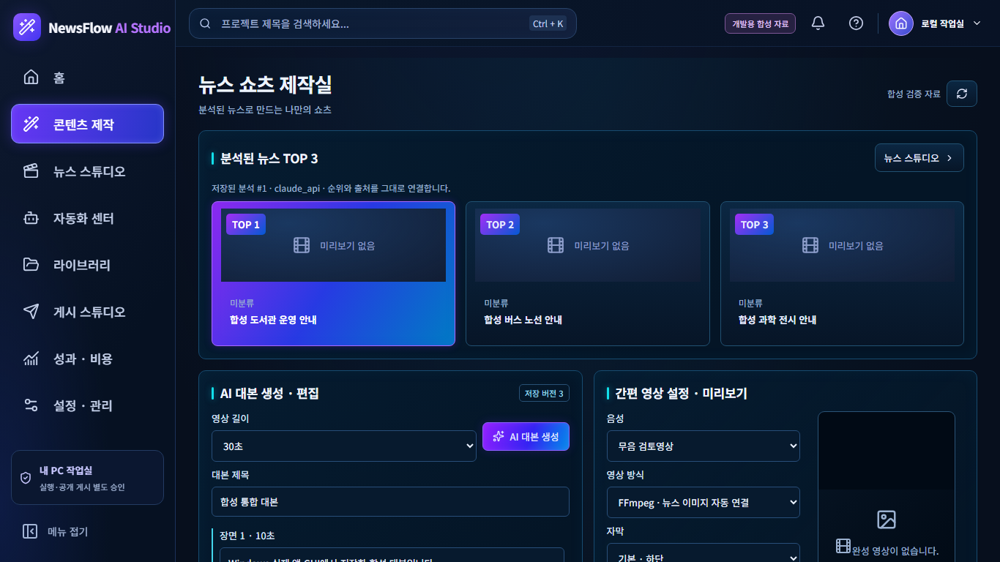
합성 자료 · 실제 Python ASGI 연결 · Windows CI. OS DPI 증거 아님. 제품 소스는 기존과 동일.
최종 보고서현재 작업의 실제 장면 수와 텍스트를 사용하므로 시안의 예시 5문단과 다름. 작은 글꼴·간격 차이, 승인 창의 필수 검토 항목은 유지.


실제 계약의 720p Seedance 참조 입력과 FFmpeg 1080×1920 출력을 구분. 가상 캐릭터·클립·120크레딧을 채우지 않음. 새 작업 저장과 유료 스토리/영상 승인을 분리.

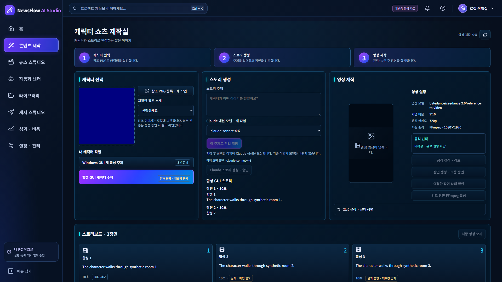
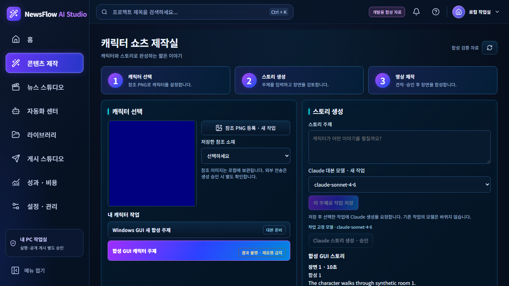
실제 성공 파일만 표시. 참조 기반 유료 편집·가상 결과 탐색은 구현된 것처럼 보이지 않음. 스타일은 프롬프트에 반영하는 텍스트 프리셋이며 별도 모델 기능으로 주장하지 않음.

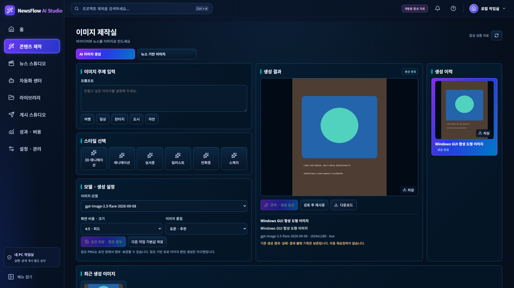
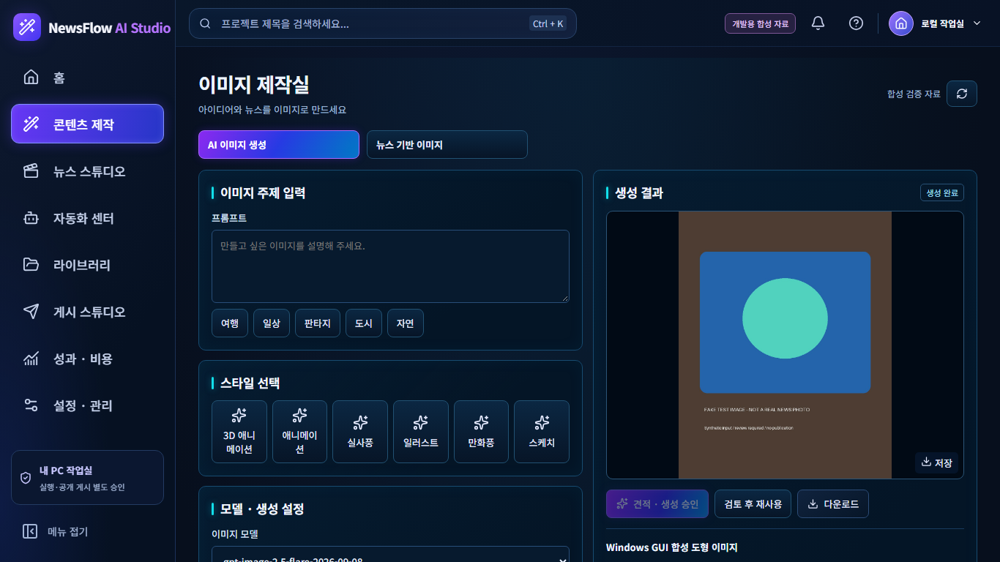
임의 날짜·카테고리·로고 출력 스위치를 만들지 않음. 출처·AI 표시·사용권 검토는 필수. 공식 견적/실계정 권한 미확정 유료 실행 차단 유지. 완료 이미지 문구 변경은 기존 재생성 승인 계약 적용.

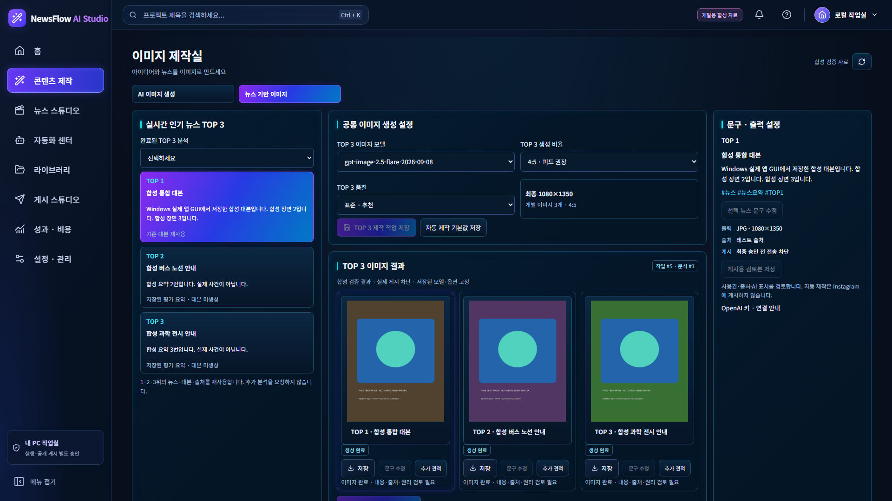
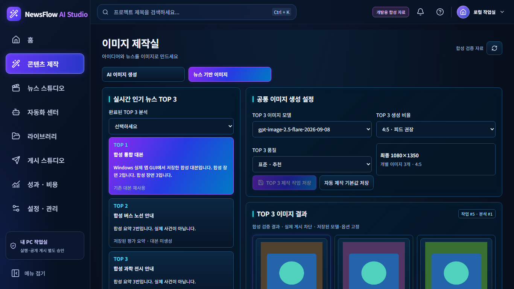
저장된 분석 필드만 노출. 존재하지 않는 키워드·관련 추천·즐겨찾기·공유 서비스는 가상 버튼으로 만들지 않음. 유료 분석을 화면 로딩 때 실행하지 않음.

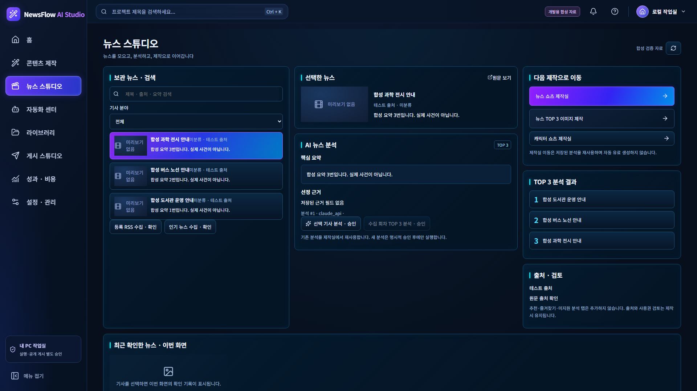
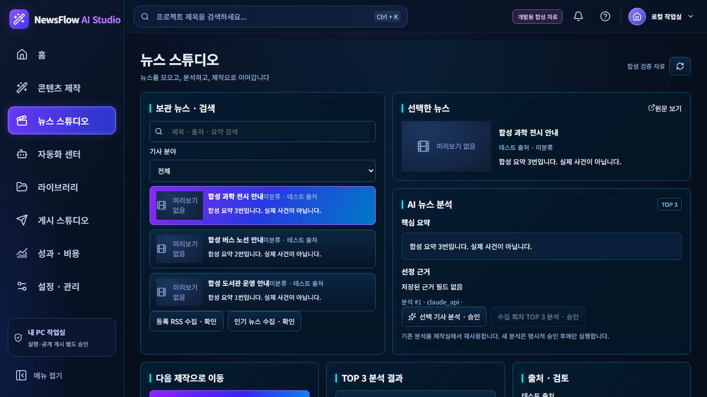
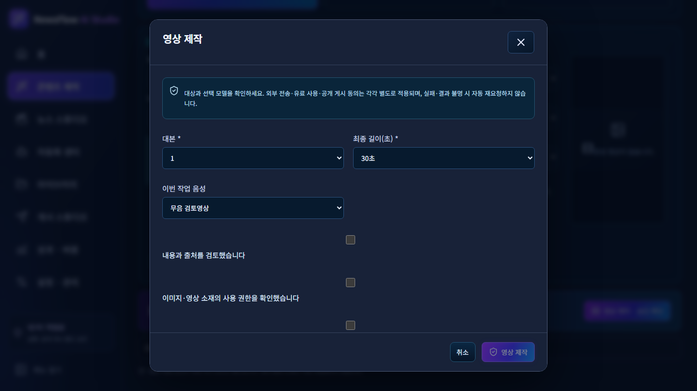
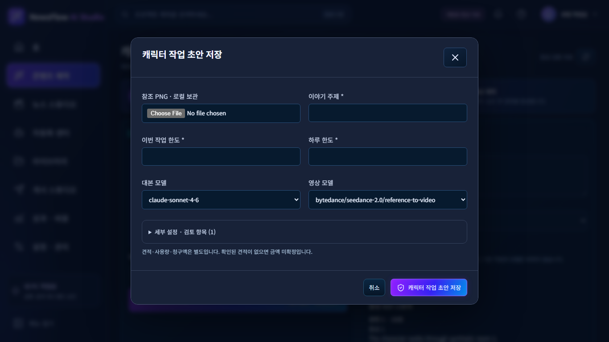
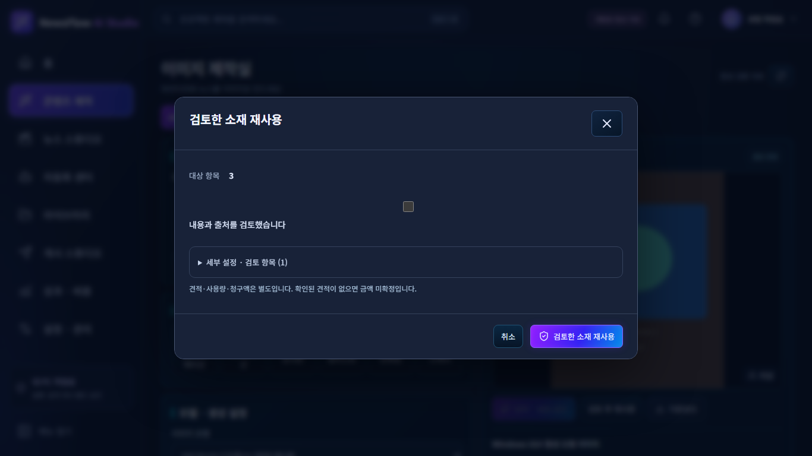